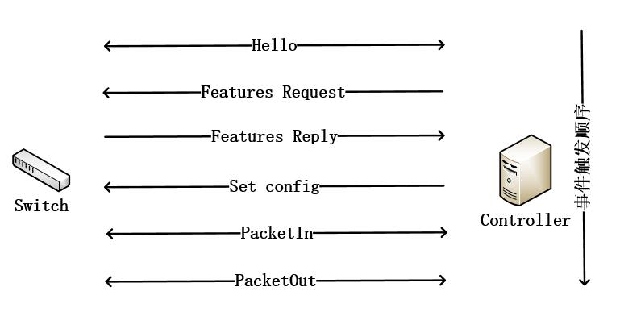

概述
代码由两个类组成，一个是封装了寻找路径算法的FindPathTopo类，另一个是起控制器作用的Controller类。
FindPathTopo类
首先是FindPathTopo类，在类的初始化中，定义了switches存放寻找路径需要的所有交换机，还有adjdict存放交换机之间的端口连接关系。
def _ _ init _ _
# 当创建一个类时进行数据初始化
def __init__(self):
# self.switches 存放所有的交换机的dpid
self.switches = None
# self.adjdict 存放所有交换机之间的端口连接
self.adjdict = {}对于switches的加入只需要在交换机接入控制器的时候加入即可，而对adjdict的赋值，为了防止字典的KeyErrors情况出现定义了get和set方法。
def set_Adjdict
# 初始化adjdict的get和set方法
def set_Adjdict(self, s1, s2, port):
if s1 not in self.adjdict.keys():
self.adjdict[s1] = {}
self.adjdict[s1][s2] = portdef get_Adjdict
def get_Adjdict(self, s1):
return self.adjdict[s1]在获取了所有交换机和拓扑关系后，我们便可以在两个交换机之间要ping时通过DFS和BFS算法找到最短和最长路径，并将最长路径通过networkx绘制出来存放在该代码的同一个文件夹内（如果不存放会使在ping过程中不能及时发送包导致大量丢包）。
def findAllpaths
# 用 DFS 找到两个交换机之间的所有路径
def findAllpaths(self, src_sw, dst_sw, sign, path, allpaths):
if src_sw == dst_sw:
# print(path)
allpaths.append(path.copy())
else:
for sw in self.switches:
if (sw in (self.get_Adjdict(src_sw)).keys()) and (sign[sw] == 0):
sign[sw] = 1
path.append(sw)
self.findAllpaths(sw, dst_sw, sign, path, allpaths)
path.remove(sw)
sign[sw] = 0def findLpath
# 用 DFS 找到两个交换机之间的所有路径，并找出最长路
def findLpath(self, src_sw, dst_sw, src_port, dst_port):
print("now we begin to find all paths from sw:{} port:{} to sw:{} port:{} ".format(src_sw, src_port, dst_sw,
dst_port))
# 用于记录一个交换机的是否被访问过
sign = {}
# 把所有交换机的sign[sw]都初始化为0
for sw in self.switches:
sign[sw] = 0
sign[src_sw] = 1
# 将出发的交换机标记为已经访问，并将该交换机加入path因为所有路径都从这个交换机出发
path = [src_sw]
# 存放所有的path
allpaths = []
# 找到所有的path
self.findAllpaths(src_sw, dst_sw, sign, path, allpaths)
print("allpaths(nums:{}) are list as follows:".format(len(allpaths)))
lpath = []
for i in allpaths:
self.printPath(i)
if len(i) > len(lpath):
lpath = i
print("the longest path :", end=" ")
self.printPath(lpath)
self.findSpath(src_sw, dst_sw)
# 绘制出最长的路径
if not os.path.exists("1.jpg"):
sw_connect = []
draw_path = []
for s1 in self.switches:
for s2 in self.switches:
if s2 in (self.get_Adjdict(s1)).keys():
sw_connect.append((s1, s2))
for i in range(len(lpath) - 1):
draw_path.append((lpath[i], lpath[i + 1]))
draw_path.append((lpath[i + 1], lpath[i]))
draw_graph(sw_connect, draw_path)
# 现在我们已经找到最长路径了 需要在交换机之间配置最长路径
# 交换机之间路径的配置格式如右 (src_sw,inport,outport)->.......->(dst_sw,inport,outport) 我们要把所有路经的交换机都记录为左边的格式
cpath = [] # configure path
inport = src_port
for i in range(len(lpath) - 1):
s1 = lpath[i]
s2 = lpath[i + 1]
# get s1->s2 outport
outport = self.get_Adjdict(s1)[s2]
cpath.append((s1, inport, outport))
inport = self.get_Adjdict(s2)[s1]
cpath.append((dst_sw, inport, dst_port))
# return cpath can configure switch's path 返回可以配置的路径
return cpathdef findSpath
# 用BFS找到最短路径
def findSpath(self, src_sw, dst_sw):
# the front lines are the same as dfs
# sign records a switch whether is visited
sign = {}
# init sign as 0,a switch one sign
for sw in self.switches:
sign[sw] = 0
sign[src_sw] = -1
# use list function as queue
queue_list = [src_sw]
# bfs find the shortest way
while queue_list:
sw = queue_list.pop()
if sw == dst_sw:
print("the shortest path :", end=" ")
self.printsPath(sw, sign)
print("end")
return
for u in self.get_Adjdict(sw).keys():
if sign[u] == 0:
sign[u] = sw
queue_list.insert(0, u)
#BFS算法对路径进行记录 这里不作讲解
def printsPath(self, sw, sign):
if sign[sw] != -1:
self.printsPath(sign[sw], sign)
print(f"{sw}-", end=' ')Controller类
对于Controller类，由于网络拓扑中控制器管理的是支持openflow协议的交换机，我们首先应该定义该RyuApp支持的openflow版本。
class Controller(app_manager.RyuApp):
# openflow version 1.3
OFP_VERSIONS = [ofproto_v1_3.OFP_VERSION]然后进行类的初始化，引入了上面定义的拓扑类，定义了datapaths存放所有交换机的datapath，arp_history记录广播的包是否经过交换机（防止环路风暴），arp_table存放相互对应的ip和mac。
def _ _ init _ _
def __init__(self, *args, **kwargs):
super(Controller, self).__init__(*args, **kwargs)
self.sw_dp_to_port = {}
self.topo = FindWayTopo()
self.datapaths = []
self.arp_history = {}
self.arp_table = {}在这个类的编写过程中我摒弃了像simple_switch_13那样子定义的用交换机的DPID寻找mac和端口的mac表，而是改用了比较契合这个项目的通过mac寻找交换机的DPID和端口的mac表。（因为之前的mac表是记录交换机里面所有可到达mac的port，而我们寻找路径需要的是一个mac所对应的源交换机，之前的mac表不能满足这种需求）
self.sw_dp_to_port = {}初始化完成后就是对控制器和交换机事件处理的编写了。这里引入交换机事件发生的几个主要交互步骤
交换机交互步骤
#HANDSHAKE_DISPATCHER:发送Hello报文并等待对端Hello报文。
#CONFIG_DISPATCHER：协商版本并发送FEATURE-REQUEST报文。
#MAIN_DISPATCHER：已收到FEATURE-REPLY报文并发送SET-CONFIG报文。
#DEAD_DISPATCHER：与对端断开连接。
#@set_ev_cls(ofp_event.Event, DISPATCHER(s))的含义就是，当接收到DISPATCHER(s)情况的Event事件进行your_function处理。我们从Features Request报文阶段（也就是交换机即将连接上控制器的时候）开始获取，对封包的处理规则进行定义。
CONFIG_DISPATCHER
@set_ev_cls(ofp_event.EventOFPSwitchFeatures, CONFIG_DISPATCHER)
def switch_features_handler
#参考simple_switch_13改编
@set_ev_cls(ofp_event.EventOFPSwitchFeatures, CONFIG_DISPATCHER)
def switch_features_handler(self, ev):
# 一开始 Switch 連上 Controller 时的初始设定Function
datapath = ev.msg.datapath # 接收 OpenFlow 交换器
ofproto = datapath.ofproto # OpenFlow 交换器使用的 OF 协定版本
parser = datapath.ofproto_parser # 处理 OF 协定的 parser（解析器）
# 以下片段yon'gu Table-Miss FlowEntry
# 首先新增一个空的 match，也就是能够 match 任何封包的 match rule
match = parser.OFPMatch()
# 指定这一条 Table-Miss FlowEntry 的对应行为
# 把所有不知道如何处理的封包都送到 Controller
actions = [parser.OFPActionOutput(ofproto.OFPP_CONTROLLER,
ofproto.OFPCML_NO_BUFFER)]
# 把 Table-Miss FlowEntry 設定至 Switch，並指定优先权為 0 (最低)
self.add_flow(datapath, 0, match, actions)def add_flow
def add_flow(self, datapath, priority, match, actions):
# 取得与 Switch 使用的 IF 版本 对应的 OF 协定及 parser
ofproto = datapath.ofproto
parser = datapath.ofproto_parser
# Instruction 是定义当封包满足 match 時，所要执行的动作
# 因此把 action 以 OFPInstructionActions 包裝起來
inst = [parser.OFPInstructionActions(ofproto.OFPIT_APPLY_ACTIONS,
actions)]
# FlowMod Function 可以讓我們對 Switch 寫入由我們所定義的 Flow Entry
if buffer_id:
mod = parser.OFPFlowMod(datapath=datapath, buffer_id=buffer_id,
priority=priority, match=match,
instructions=inst)
else:
mod = parser.OFPFlowMod(datapath=datapath, priority=priority,
match=match, instructions=inst)
# 把定义好的 FlowEntry 送給 Switch
datapath.send_msg(mod)SwitchEnter
@set_ev_cls(event.EventSwitchEnter)
定义完后控制器将Features Request报文发往交换机，交换机发送Features Reply报文并接入控制器，控制器触发event.EventSwitchEnter，在这里我们需要对交换机及交换机的拓扑连接等相关信息进行记录。
def switch_topoFind_handler
@set_ev_cls(event.EventSwitchEnter)
def switch_topoFind_handler(self, event):
# 找到已连接的所有交换机 ps.这里的switches和topo里面定义的switches不一样
switches = copy.copy(get_switch(self, None))
# 把所有已连接交换机的dpid放在topo.switches内
self.topo.switches = [sw.dp.id for sw in switches]
self.logger.info("switches: {}".format(self.topo.switches))
# 把所有已连接交换机的datapath放在datapaths中
self.datapaths = [sw.dp for sw in switches]
# 得到所有交换机之间的拓扑连接 a links is like（格式） : (src_sw,dst_sw,inport,outport)
links = copy.copy(get_link(self, None))
# 把所有拓扑连接的数据放在列表links_msg里面
links_msg = [(l.src.dpid, l.dst.dpid, l.src.port_no, l.dst.port_no) for l in links]
self.logger.info("All links({}):".format(len(links_msg)))
for src, dst, ip, op in links_msg:
# 拓扑是双向的
self.topo.set_Adjdict(src, dst, ip)
self.topo.set_Adjdict(dst, src, op)
self.logger.info(f"link from sw:{src} port:{ip} to sw{dst} port:{op} ")MAIN_DISPATCHER
@set_ev_cls(ofp_event.EventOFPPacketIn, MAIN_DISPATCHER)
控制器发送完set-config报文后交换机要对PacketIn进来的封包进行处理。
def _packet_in_handler
@set_ev_cls(ofp_event.EventOFPPacketIn, MAIN_DISPATCHER)
def _packet_in_handler(self, ev):
# 收到來自 Switch 不知如何處理的封包（Match 到 Table-Miss FlowEntry）
# If you hit this you might want to increase
# the "miss_send_length" of your switch
if ev.msg.msg_len < ev.msg.total_len:
self.logger.debug("packet truncated: only %s of %s bytes",
ev.msg.msg_len, ev.msg.total_len)
# 获取包的基本信息
msg = ev.msg
datapath = msg.datapath
ofproto = datapath.ofproto
parser = datapath.ofproto_parser
in_port = msg.match['in_port']
pkt = packet.Packet(msg.data)
# eth 里面 存储着包的源和目标mac地址
eth = pkt.get_protocols(ethernet.ethernet)[0]
# 丢弃泛洪的包
if eth.ethertype == ether_types.ETH_TYPE_LLDP:
# ignore lldp packet
return
# 记录src和dst的mac地址
dst = eth.dst
src = eth.src
dpid = datapath.id
# arp包
arp_pkt = pkt.get_protocol(arp.arp)
if arp_pkt:
#记录到arp表中 ip->mac
self.arp_table[arp_pkt.src_ip] = src
# 丢弃ipv6的包 监听端口不同 不丢弃可能会造成大量丢包（猜测我也看不太懂）
if pkt.get_protocol(ipv6.ipv6):
match = parser.OFPMatch(eth_type=eth.ethertype)
actions = []
self.add_flow(datapath, 1, match, actions)
return None
# if do not exit init {}
self.sw_dp_to_port.setdefault(src, [])
# 学习mac、交换机、端口 避免下一次泛洪
self.sw_dp_to_port[src].extend([dpid, in_port])
out_port = None如果已经学习到目标mac的相关交换机或者端口数据我们可以进行交换机之间路径的配置（这里将配置的函数放在后面讲解）
#如果目标mac已经学习过 进行路径配置
if dst in self.sw_dp_to_port.keys():
#获取寻找路径所需要的所有数据
dst_port = self.sw_dp_to_port[dst][1]
src_sw = self.sw_dp_to_port[src][0]
dst_sw = self.sw_dp_to_port[dst][0]
lpath = self.topo.findLpath(src_sw, dst_sw, in_port, dst_port)
self.logger.info("The longest path from {} to {} contains {} switches".format(src, dst, len(lpath)))
assert len(lpath) > 0
path_str = ''
for sw, ip, op in lpath:
path_str += 'ip:{} sw:{} op:{}----'.format(ip, sw, op)
print("The longest path from {} to {} is {}end".format(src, dst, path_str))
print("Now configure the path between switches")
#配置路径
self.configurePath(ev.msg, lpath, src, dst)
print("Configure OK")
#这里意思是我们在找到路径后把发包的端口配置成我们路径配置设置好的out_port
for sw, _ , op in lpath:
if sw == dpid:
out_port = op如果无法进行路径配置则进行判断需不需要泛洪处理
else:
'''
如果是广播包且已经从别的端口进入过该交换机或发送过arp reply（指已经学习到mac地址）
在这两种情况下不需要泛洪处理 因为泛洪是为了找到目标主机来接收数据包 如果已经是广播包且进入过该交换机或者已经学习到mac地址就不需要泛洪了
'''
if self.arp_handler(msg): # answer or drop
return
out_port = ofproto.OFPP_FLOOD判断完之后将需要执行的动作等信息都包装好后将数据包发送出去
# 把刚刚的 out_port 作成这次封包的处理动作
actions = [parser.OFPActionOutput(out_port)]
data = None
if msg.buffer_id == ofproto.OFP_NO_BUFFER:
data = msg.data
out = parser.OFPPacketOut(datapath=datapath, buffer_id=msg.buffer_id,
in_port=in_port, actions=actions, data=data)
# 把要 Switch 执行的动作包装成 Packet_out，并让 Switch 执行动作
datapath.send_msg(out)到这里我们的控制器就已经能够对交换机输入的数据包进行处理了。
接下来补充的是两个前面提到的函数。
def find_dp
该函数用于找出dpid对应交换机的datapath用于配置路径
def find_dp(self, sw_dpid):
for sw in self.datapaths:
if sw.id == sw_dpid:
return sw
return Nonedef configurePath
该函数用于将DFS算法得出的最长路径配置到两个交换机之间
def configurePath(self, msg, lpath, src_mac, dst_mac):
datapath = msg.datapath
ofproto = datapath.ofproto
parser = datapath.ofproto_parser
print(lpath)
for sw, ip, op in lpath:
# set match 只有符合in_port=ip, eth_src=src_mac, eth_dst=dst_mac的包才会被配置
match = parser.OFPMatch(in_port=ip, eth_src=src_mac, eth_dst=dst_mac)
# set actions 设置行为 从op端口发送数据包
actions = [parser.OFPActionOutput(op)]
#找出路径中要配置的交换机的datapath进行设置发包行为
datapath = self.find_dp(int(sw))
if datapath is None:
return
#配置行为
inst = [parser.OFPInstructionActions(ofproto.OFPIT_APPLY_ACTIONS, actions)]
mod = datapath.ofproto_parser.OFPFlowMod(
datapath=datapath,
match=match,
priority=1,
instructions=inst
)
#发送数据包
datapath.send_msg(mod)networkx绘图
# 参考官方文档 这里实现将每张拓扑的可视化界面都保存下来
def draw_graph(sw, link,src_sw,dst_sw):
plt.figure()
# extract nodes from graph
nodes = set([n1 for n1, n2 in sw] + [n2 for n1, n2 in sw])
# create networkx graph
G = nx.Graph()
# add nodes
for node in nodes:
G.add_node(node)
# add edges
G.add_edges_from(sw, color='b')
G.add_edges_from(link, color='r')
# draw graph
pos = nx.spring_layout(G)
# nodes
nx.draw_networkx_nodes(G, pos, node_size=750)
# edges
nx.draw_networkx_edges(G, pos, edgelist=sw, edge_color='b')
nx.draw_networkx_edges(G, pos, edgelist=link, edge_color='r')
# labels
nx.draw_networkx_labels(G, pos, font_size=13, font_family='sans-serif')
plt.axis('off')
# show graph
plt.savefig('./visual photo/'+str(src_sw)+'to'+str(dst_sw)+".jpg")完整源码
完整代码为更改后的代码，与前面讲解出现的代码会有不同，请注意。
import copy
import os.path
import matplotlib.pyplot as plt
import networkx as nx
from ryu.base import app_manager
from ryu.controller import ofp_event
from ryu.controller.handler import set_ev_cls, CONFIG_DISPATCHER, MAIN_DISPATCHER
from ryu.lib.packet import ethernet, ether_types, arp, ipv6
from ryu.lib.packet import packet
from ryu.ofproto import ofproto_v1_3
from ryu.topology import event
from ryu.topology.api import get_switch, get_link
class FindWayTopo(object):
# 当创建一个类时进行数据初始化
def __init__(self):
# self.switches 存放所有的交换机的dpid
self.switches = None
# self.adjdict 存放所有交换机之间的端口连接 但是这里要注意keyerrors
self.adjdict = {}
# 初始化adjdict的get和set方法
def set_Adjdict(self, s1, s2, port):
if s1 not in self.adjdict.keys():
self.adjdict[s1] = {}
self.adjdict[s1][s2] = port
def get_Adjdict(self, s1):
return self.adjdict[s1]
# 更好的输出路径
@staticmethod
def printPath(path):
# print(path)
for sw in path:
print(sw, "-", end=' ') # [(3,1,[3't'# ]),(4,2,[1])]
print("end")
def printsPath(self, sw, sign):
if sign[sw] != -1:
self.printsPath(sign[sw], sign)
print(f"{sw}-", end=' ')
# 用 DFS 找到两个交换机之间的所有路径
def findAllpaths(self, src_sw, dst_sw, sign, path, allpaths):
if src_sw == dst_sw:
# print(path)
allpaths.append(path.copy())
else:
for sw in self.switches:
if (sw in (self.get_Adjdict(src_sw)).keys()) and (sign[sw] == 0):
sign[sw] = 1
path.append(sw)
self.findAllpaths(sw, dst_sw, sign, path, allpaths)
path.remove(sw)
sign[sw] = 0
# 用 DFS 找到两个交换机之间的所有路径，并找出最长路
def findLpath(self, src_sw, dst_sw, src_port, dst_port):
print("now we begin to find all paths from sw:{} port:{} to sw:{} port:{} ".format(src_sw, src_port, dst_sw,
dst_port))
# 用于记录一个交换机的是否被访问过
sign = {}
# 把所有交换机的sign[sw]都初始化为0
for sw in self.switches:
sign[sw] = 0
sign[src_sw] = 1
# 将出发的交换机标记为已经访问，并将该交换机加入path因为所有路径都从这个交换机出发
path = [src_sw]
# 存放所有的path
allpaths = []
# 找到所有的path
self.findAllpaths(src_sw, dst_sw, sign, path, allpaths)
print("allpaths(nums:{}) are list as follows:".format(len(allpaths)))
lpath = []
for i in allpaths:
self.printPath(i)
if len(i) > len(lpath):
lpath = i
print("the longest path :", end=" ")
self.printPath(lpath)
self.findSpath(src_sw, dst_sw)
# 绘制出最长的路径
#如果不存在文件夹则生成
if not os.path.exists('./visual photo/'):
os.makedirs('./visual photo/')
if not os.path.exists('./visual photo/'+str(src_sw)+'to'+str(dst_sw)+".jpg"):
sw_connect = []
draw_path = []
for s1 in self.switches:
for s2 in self.switches:
if s2 in (self.get_Adjdict(s1)).keys():
sw_connect.append((s1, s2))
for i in range(len(lpath) - 1):
draw_path.append((lpath[i], lpath[i + 1]))
draw_path.append((lpath[i + 1], lpath[i]))
draw_graph(sw_connect, draw_path,src_sw,dst_sw)
# 现在我们已经找到最长路径了 需要在交换机之间配置最长路径
# 交换机之间路径的配置格式如右 (src_sw,inport,outport)->.......->(dst_sw,inport,outport) 我们要把所有路经的交换机都记录为左边的格式
cpath = [] # configure path
inport = src_port
for i in range(len(lpath) - 1):
s1 = lpath[i]
s2 = lpath[i + 1]
# get s1->s2 outport
outport = self.get_Adjdict(s1)[s2]
cpath.append((s1, inport, outport))
inport = self.get_Adjdict(s2)[s1]
cpath.append((dst_sw, inport, dst_port))
# return cpath can configure switch's path 返回可以配置的路径
return cpath
# 用BFS找到最短路径
def findSpath(self, src_sw, dst_sw):
# the front lines are the same as dfs
# sign records a switch whether is visited
sign = {}
# init sign as 0,a switch one sign
for sw in self.switches:
sign[sw] = 0
sign[src_sw] = -1
# use list function as queue
queue_list = [src_sw]
# bfs find the shortest way
while queue_list:
sw = queue_list.pop()
if sw == dst_sw:
print("the shortest path :", end=" ")
self.printsPath(sw, sign)
print("end")
return
for u in self.get_Adjdict(sw).keys():
if sign[u] == 0:
sign[u] = sw
queue_list.insert(0, u)
class Controller(app_manager.RyuApp):
# openflow version 1.3
OFP_VERSIONS = [ofproto_v1_3.OFP_VERSION]
def __init__(self, *args, **kwargs):
super(Controller, self).__init__(*args, **kwargs)
self.sw_dp_to_port = {}
self.topo = FindWayTopo()
self.datapaths = []
self.arp_history = {}
self.arp_table = {}
#参考simple_switch_13改编
@set_ev_cls(ofp_event.EventOFPSwitchFeatures, CONFIG_DISPATCHER)
def switch_features_handler(self, ev):
# 一开始 Switch 連上 Controller 时的初始设定Function
datapath = ev.msg.datapath # 接收 OpenFlow 交换器
ofproto = datapath.ofproto # OpenFlow 交换器使用的 OF 协定版本
parser = datapath.ofproto_parser # 处理 OF 协定的 parser（解析器）
# install table-miss flow entry
#
# We specify NO BUFFER to max_len of the output action due to
# OVS bug. At this moment, if we specify a lesser number, e.g.,
# 128, OVS will send Packet-In with invalid buffer_id and
# truncated packet data. In that case, we cannot output packets
# correctly. The bug has been fixed in OVS v2.1.0.
# 以下片段yon'gu Table-Miss FlowEntry
# 首先新增一个空的 match，也就是能够 match 任何封包的 match rule
match = parser.OFPMatch()
# 指定这一条 Table-Miss FlowEntry 的对应行为
# 把所有不知道如何处理的封包都送到 Controller
actions = [parser.OFPActionOutput(ofproto.OFPP_CONTROLLER,
ofproto.OFPCML_NO_BUFFER)]
# 把 Table-Miss FlowEntry 設定至 Switch，並指定优先权為 0 (最低)
self.add_flow(datapath, 0, match, actions)
def add_flow(self, datapath, priority, match, actions, buffer_id=None):
# 取得与 Switch 使用的 IF 版本 对应的 OF 协定及 parser
ofproto = datapath.ofproto
parser = datapath.ofproto_parser
# Instruction 是定义当封包满足 match 時，所要执行的动作
# 因此把 action 以 OFPInstructionActions 包裝起來
inst = [parser.OFPInstructionActions(ofproto.OFPIT_APPLY_ACTIONS,
actions)]
# FlowMod Function 可以讓我們對 Switch 寫入由我們所定義的 Flow Entry
if buffer_id:
mod = parser.OFPFlowMod(datapath=datapath, buffer_id=buffer_id,
priority=priority, match=match,
instructions=inst)
else:
mod = parser.OFPFlowMod(datapath=datapath, priority=priority,
match=match, instructions=inst)
# 把定义好的 FlowEntry 送給 Switch
datapath.send_msg(mod)
#参考simple_switch_13改编
@set_ev_cls(ofp_event.EventOFPPacketIn, MAIN_DISPATCHER)
def _packet_in_handler(self, ev):
# 收到來自 Switch 不知如何處理的封包（Match 到 Table-Miss FlowEntry）
# If you hit this you might want to increase
# the "miss_send_length" of your switch
if ev.msg.msg_len < ev.msg.total_len:
self.logger.debug("packet truncated: only %s of %s bytes",
ev.msg.msg_len, ev.msg.total_len)
# 获取包的基本信息
msg = ev.msg
datapath = msg.datapath
ofproto = datapath.ofproto
parser = datapath.ofproto_parser
in_port = msg.match['in_port']
pkt = packet.Packet(msg.data)
# eth 里面 存储着包的源和目标mac地址
eth = pkt.get_protocols(ethernet.ethernet)[0]
# 丢弃泛洪的包
if eth.ethertype == ether_types.ETH_TYPE_LLDP:
# ignore lldp packet
return
# 记录src和dst的mac地址
dst = eth.dst
src = eth.src
dpid = datapath.id
# arp包
arp_pkt = pkt.get_protocol(arp.arp)
if arp_pkt:
#记录到arp表中 ip->mac
self.arp_table[arp_pkt.src_ip] = src
# self.flood_history.setdefault(dpid, [])
# if this is a ipv6 broadcast packet
# this kind of packet has some obvious charateristics.
# Its destination mac address starts with "33:33"
# if '33:33' in dst[:5]:
# # the controller has not flooded this packet before
# if (src, dst) not in self.flood_history[dpid]:
# # we remember this packet
# self.flood_history[dpid].append((src, dst))
# else:
# # the controller have flooded this packet before,we do nothing and return
# return
# 丢弃ipv6的包 监听端口不同 不丢弃可能会造成大量丢包
if pkt.get_protocol(ipv6.ipv6):
match = parser.OFPMatch(eth_type=eth.ethertype)
actions = []
self.add_flow(datapath, 1, match, actions)
return None
# if do not exit init {}
self.sw_dp_to_port.setdefault(src, [])
# 学习mac、交换机、端口 避免下一次泛洪
self.sw_dp_to_port[src].extend([dpid, in_port])
out_port = None
#如果目标mac已经学习过 进行路径配置
if dst in self.sw_dp_to_port.keys():
dst_port = self.sw_dp_to_port[dst][1]
src_sw = self.sw_dp_to_port[src][0]
dst_sw = self.sw_dp_to_port[dst][0]
lpath = self.topo.findLpath(src_sw, dst_sw, in_port, dst_port)
self.logger.info("The longest path from {} to {} contains {} switches".format(src, dst, len(lpath)))
assert len(lpath) > 0
path_str = ''
for sw, ip, op in lpath:
path_str += 'ip:{} sw:{} op:{}----'.format(ip, sw, op)
print("The longest path from {} to {} is {}end".format(src, dst, path_str))
print("Now configure the path between switches")
self.configurePath(ev.msg, lpath, src, dst)
print("Configure OK")
for sw, _, op in lpath:
if sw == dpid:
out_port = op
else:
'''
如果是广播包且已经从别的端口进入过该交换机或发送过arp reply（指已经学习到mac地址）
在这两种情况下不需要泛洪处理 因为泛洪是为了找到目标主机来接收数据包 如果已经是广播包且进入过该交换机或者已经学习到mac地址就不需要泛洪了
'''
if self.arp_handler(msg): # answer or drop
return
out_port = ofproto.OFPP_FLOOD
# 把刚刚的 out_port 作成这次封包的处理动作
actions = [parser.OFPActionOutput(out_port)]
data = None
if msg.buffer_id == ofproto.OFP_NO_BUFFER:
data = msg.data
out = parser.OFPPacketOut(datapath=datapath, buffer_id=msg.buffer_id,
in_port=in_port, actions=actions, data=data)
# 把要 Switch 执行的动作包装成 Packet_out，并让 Switch 执行动作
datapath.send_msg(out)
# after add_flow switch enter we should put it in class we defined
@set_ev_cls(event.EventSwitchEnter)
def switch_enter_handler(self, event):
self.logger.info("A switch entered.")
self.switch_topoFind_handler(event)
self.logger.info("Find all topology switches we can find\n")
@set_ev_cls(event.EventSwitchLeave)
def switch_leave_handler(self, event):
self.logger.info("A switch leaved.")
self.switch_topoFind_handler(event)
self.logger.info("Find all topology switches we can find\n")
def switch_topoFind_handler(self, event):
# 找到已连接的所有交换机 ps.这里的switches和topo里面定义的switches不一样
switches = copy.copy(get_switch(self, None))
# 把所有已连接交换机的dpid放在topo.switches内
self.topo.switches = [sw.dp.id for sw in switches]
self.logger.info("switches: {}".format(self.topo.switches))
# 把所有已连接交换机的datapath放在datapaths中
self.datapaths = [sw.dp for sw in switches]
# 得到所有交换机之间的拓扑连接 a links is like（格式） : (src_sw,dst_sw,inport,outport)
links = copy.copy(get_link(self, None))
# 把所有拓扑连接的数据放在列表links_msg里面
links_msg = [(l.src.dpid, l.dst.dpid, l.src.port_no, l.dst.port_no) for l in links]
self.logger.info("All links({}):".format(len(links_msg)))
for src, dst, ip, op in links_msg:
# 拓扑是双向的
self.topo.set_Adjdict(src, dst, ip)
self.topo.set_Adjdict(dst, src, op)
self.logger.info(f"link from sw:{src} port:{ip} to sw{dst} port:{op} ")
self.logger.info(f"\nThere are {len(links_msg)} links below.")
def configurePath(self, msg, lpath, src_mac, dst_mac):
datapath = msg.datapath
ofproto = datapath.ofproto
parser = datapath.ofproto_parser
print(lpath)
for sw, ip, op in lpath:
# set match
match = parser.OFPMatch(in_port=ip, eth_src=src_mac, eth_dst=dst_mac)
# set actions
actions = [parser.OFPActionOutput(op)]
datapath = self.find_dp(int(sw))
if datapath is None:
return
inst = [parser.OFPInstructionActions(ofproto.OFPIT_APPLY_ACTIONS, actions)]
mod = datapath.ofproto_parser.OFPFlowMod(
datapath=datapath,
match=match,
idle_timeout=0,
hard_timeout=0,
priority=1,
instructions=inst
)
datapath.send_msg(mod)
def find_dp(self, sw_dpid):
for sw in self.datapaths:
if sw.id == sw_dpid:
return sw
return None
# refer https://www.cnblogs.com/caijigugujiao/p/14664276.html can see for more detail
def arp_handler(self, msg):
# 包的基本数据
datapath = msg.datapath
ofproto = datapath.ofproto
parser = datapath.ofproto_parser
in_port = msg.match['in_port']
pkt = packet.Packet(msg.data)
eth = pkt.get_protocols(ethernet.ethernet)[0]
arp_pkt = pkt.get_protocol(arp.arp)
# void error
dst_mac = ''
src_mac = ''
if eth:
dst_mac = eth.dst
src_mac = eth.src
# 解决环路风暴：
# 在回复ARP请求之前，必须解决的是网络环路问题。
# 解决方案是：
# 以(dpid,eth_src,arp_dst_ip)为key，
# 记录第一个数据包的in_port，并将从网络中返回的数据包丢弃，
# 保证同一个交换机中的某一个广播数据包只能有一个入口，
# 从而防止成环。在此应用中，默认网络中发起通信的第一个数据包都是ARP数据包。
# 判断该包是不是广播包
if dst_mac == 'ff:ff:ff:ff:ff:ff' and arp_pkt:
# target ip
dst_ip = arp_pkt.dst_ip
src_ip = arp_pkt.src_ip
# 判断这个包有没有经过过这个交换机
if (datapath.id, src_ip, dst_ip) in self.arp_history:
# 如果这个包已经从别的端口进入过这个交换机
if self.arp_history[(datapath.id, src_ip, dst_ip)] != in_port:
return True
else:
# 这个包第一次到达这个交换机记录下来
self.arp_history[(datapath.id, src_ip, dst_ip)] = in_port
print(f"{datapath.id} first come ,arp learn this switch")
# """
# ARP回复：
# 解决完环路拓扑中存在的广播风暴问题之后，要利用SDN控制器获取网络全局的信息的能力，去代理回复ARP请求，
# 从而减少网络中泛洪的ARP请求数据。通过自学习主机ARP记录，在通过查询记录并回复。
# """
if arp_pkt:
opcode = arp_pkt.opcode
if opcode == arp.ARP_REQUEST:
# hardware type
hwtype = arp_pkt.hwtype
# protocol type
proto = arp_pkt.proto
# hardware address length
hlen = arp_pkt.hlen
# protocol address length
plen = arp_pkt.plen
# src ip
arp_src_ip = arp_pkt.src_ip
# dst ip
arp_dst_ip = arp_pkt.dst_ip
if arp_dst_ip in self.arp_table:
actions = [parser.OFPActionOutput(in_port)]
arp_reply = packet.Packet()
arp_reply.add_protocol(ethernet.ethernet(
ethertype=eth.ethertype,
dst=src_mac,
src=self.arp_table[arp_dst_ip]))
# add arp protocol
arp_reply.add_protocol(arp.arp(
opcode=arp.ARP_REPLY,
src_mac=self.arp_table[arp_dst_ip],
src_ip=arp_dst_ip,
dst_mac=src_mac,
dst_ip=arp_src_ip))
arp_reply.serialize()
# arp reply
out = parser.OFPPacketOut(
datapath=datapath,
buffer_id=ofproto.OFP_NO_BUFFER,
in_port=ofproto.OFPP_CONTROLLER,
actions=actions, data=arp_reply.data)
datapath.send_msg(out)
return True
return False
# draw
def draw_graph(sw, link,src_sw,dst_sw):
plt.figure()
# extract nodes from graph
nodes = set([n1 for n1, n2 in sw] + [n2 for n1, n2 in sw])
# create networkx graph
G = nx.Graph()
# add nodes
for node in nodes:
G.add_node(node)
# add edges
G.add_edges_from(sw, color='b')
G.add_edges_from(link, color='r')
# draw graph
pos = nx.spring_layout(G)
# nodes
nx.draw_networkx_nodes(G, pos, node_size=750)
# edges
nx.draw_networkx_edges(G, pos, edgelist=sw, edge_color='b')
nx.draw_networkx_edges(G, pos, edgelist=link, edge_color='r')
# labels
nx.draw_networkx_labels(G, pos, font_size=13, font_family='sans-serif')
plt.axis('off')
# show graph
plt.savefig('./visual photo/'+str(src_sw)+'to'+str(dst_sw)+".jpg")- 本文链接：http://example.com/2021/11/14/RYU%E6%9C%80%E7%9F%AD%E8%B7%AF%E9%85%8D%E7%BD%AE%E4%BB%A3%E7%A0%81%E8%AE%B2%E8%A7%A3/
- 版权声明：本博客所有文章除特别声明外，均默认采用 许可协议。